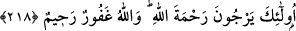

Hakk’ı zikret; cin ve şeytanın sesine kulak verme!
Akbaba mesâbesindeki dünyaya gözünü kapa!
Şeyh Hasan Muhammed b. Serrâc, Cüneyd Bağdâdî (k.s.)’un şöyle dediğini
nakleder: Rüyamda İblisi sanki çırılçıplak bir hâlde gördüm. “İnsanlardan utanmaz
mısın?” dedim. Cevâben dedi ki: “Eğer bunlar insan olsaydı, çocukların topla oynadığı
gibi bunlarla oynamazdım.” O halde “insanlar kimdir?” dedim. Şeytan cevâben dedi ki:
“Onlar, Şûnîzî câmiindeki bir topluluktur ki, bedenimi zayıflatıp, kalbimi yaktılar. Her
ne zaman onları sapıtmaya kalkışsam, derhal Allah’ı zikrederler, nerde ise zikirlerinin
nûruyla yanacak hale geldim.” Derken uyandım ve bir gece adı geçen mescide gittim.
Mescide girdiğimde oturmuş, başları örtülerle kapalı üç kişi gördüm. Beni
farkettiklerinde, bir tanesi başını açtı ve dedi ki: “Ya Eba’l-Kâsım! Sana herhangi bir
şey söylendiğinde, kabûl eder, dinlersin. Bunların Allah yolundaki gayretlerine bak,
Allah’dan başka gönüllerinde hiçbir şey yok. İşte bunlar hakiki müslümanlardır.”
Şeyhim Atpazârî Osman Efendi, Peygamber (s.a.)’in: “İslâmiyet garib olarak
başladı, garib olarak nihayete erecektir.”[144] hadis-i şerîfi hakkında bana dedi ki:
Hadis-i şerîf’te söz edilen İslâm, hakîkî İslâm’dır. Bu İslâm’ın sâhibi olan müslüman
ebediyyen mürted olmaz. Garib oluşu ise, kendisi ile dostluk kurup, anlaşacak bir
kimsenin bulunmayışıdır. Mesnevî’de anlatılır:
Bâyezid Bistâmî zamanında bir mecûsî vardı.
Bir bahtiyar müslüman ona dedi ki:
Sen müslüman olsan ne olur sanki?
Bu sâyede yüz necât ve sevinç bulursun
Mecûsî dedi ki: Eğer gerçek müslüman varsa
O, âlemin şeyhi Bayezid Bistâmî’dir.
Ben gizlice mü’min olayım, îmân getireyim.
Gerçi mührümün ağzı kapalıdır, îmân istidâdım yoktur.
Gerçi benim îmânım da sizin îmânınız gibidir.
Benim sizin îmânınız gibi bir îmâna meyil ve arzum yoktur.
Îmân tarafına yüzlerce meyil ve muhabbeti olan kimse,
Sizi, sizin hâl ve ahvâlinizi görünce îmândan uzaklaşır.
Çünkü sadece bir isim vardır ortada, mânâ yoktur.
Farsça’daki beyâbân Arapça’daki mefâze hep sahrâdır.
Mânâ değişmedikten sonra isim değişmiş neye yarar?